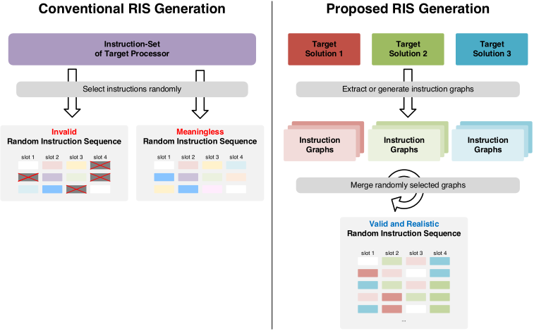
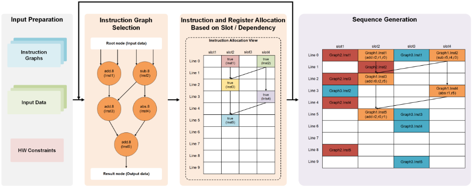
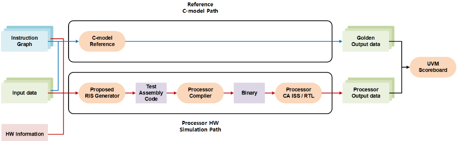
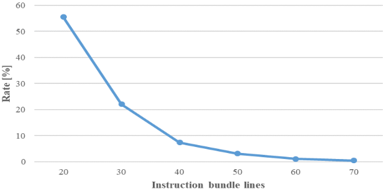

一种面向领域专用架构（DSA）处理器验证的高效随机指令序列生成方法
针对领域专用（DSA）VLIW 处理器验证中传统随机指令序列（RIS）生成有效率低、难以反映真实负载的问题，Samsung 提出一种基于预定义指令图的约束感知 RIS 生成方法。该方法将从目标应用二进制提取或人工构造的指令子序列图，在 slot、寄存器、latency 等硬件约束下以受控随机方式组装，生成 VLIW 汇编与 C wrapper，并通过 reference C-model 与 RTL 仿真（或 CA ISS）输出比对完成 golden matching，流程基于 UVM testbench，用 Cadence Xcelium 与 IMC 统计覆盖率。结果显示：在指令图定义良好的前提下，有效测试率接近 100% 且不随 bundle 数下降（基线 simple RIS 在 40 bundle 时仅 7.4%），以约一半的测试向量达到相当或更高的代码覆盖率，并在实际案例中检出此前回归遗漏的罕见输入模式触发的 bug。对团队而言，其'预验证场景图+受控随机'与有效激励率度量思路可借鉴到协议约束下的随机激励生成与回归效率优化。
传统 RIS 生成应用于 VLIW 领域专用处理器时，难以在满足流水线、VLIW bundle、slot 与寄存器等硬件约束的前提下生成合法指令组合，导致大量非法或无意义的测试浪费验证资源；且纯随机序列无法代表真实 workload，有效测试率随 bundle 数增加呈指数下降。
利用 DSA 处理器应用域已知的特点，构建指令图（instruction graph）库：节点为指令信息（类型、操作数个数），边为指令间依赖，图可从目标应用二进制提取或按验证目标人工构造。编译器级生成器读取序列图（json）与硬件约束信息文件（allocable slot、寄存器类型、instruction latency、汇编语法），通过 InstReadyQueue、RegAllocTable、SlotAllocTable 三个数据结构迭代分配指令，并在最小 line depth 节点中随机选择、随机分配 slot/寄存器、按 [cur line depth + latency, cur line depth + max latency] 随机化调度延迟，从而在约束内引入可控随机性。生成 VLIW 汇编与 C wrapper 代码后，走 reference C-model 与 RTL 仿真（或 cycle-accurate ISS）双路径执行并比对输出，流程实现于 UVM testbench，覆盖率用 Cadence Xcelium 与 IMC 收集；通过增删特定指令图可实现 directed verification。
在指令图定义良好的前提下，有效测试率接近 100%，且不随指令 bundle 数量下降；基线 simple RIS 在 20 bundle 时降至约 55.5%，40 bundle 时降至 7.4%
以约一半的测试向量数达到与 simple RIS 相当或更高的代码覆盖率（Table II）
实际案例中检出某功能单元内由罕见输入模式触发、此前回归测试难以发现的 bug
与 Genesys-Pro 等基于 CSP 求解器、需大量架构建模与详细约束描述的生成器，Transmeta DVGen 的 directed-random 混合测试，以及 ASIP EDA 工具自带 RIS 生成器不同，本文直接复用从目标应用提取的预验证指令图作为随机化基本单元，在编译器级生成器中以受控随机范围（slot/寄存器/latency）消化硬件约束，无需繁重的约束建模即可获得近 100% 有效率，并通过图库组合兼顾 directed 测试的精确性与随机生成的多样性。
相关度级别：medium
命中能力域：2.4 设计验证方法学 | 2.7 EDA/验证自动化与 AI 辅助
理由：论文的验证对象是 VLIW DSA 处理器的指令级功能，与团队存储/互连 IP（LPDDR/HBM/UCIe）的验证场景不同，指令序列生成技术本身不直接命中团队技术栈。但其方法学内核与 2.4 的约束随机验证、覆盖率驱动验证、回归效率优化高度相关：'预验证子序列图 + 硬件约束下受控随机'可类比迁移为协议约束下的随机命令/流量序列生成；'有效测试率'与'每向量覆盖率'是可借鉴的回归效率度量；C-model 与 RTL 双路径 golden 比对加 UVM/Xcelium/IMC 的流程组织也与团队验证环境同构。生成器本身作为自动化测试生成框架，与 2.7 的验证流程自动化相关。因此判定为方法有借鉴价值但不直接命中团队技术栈的 medium。
建议动作：作为方法参考存档
面向领域专用架构处理器验证的高效随机指令序列生成
Wonjae Lee 1 , Youngsub Ko 2 , Yelim Han 3 , Doowon Lee 4 , Dahyun Yoo 5 , Heewon Ahn 6 , Joongbaik Kim 7
三星电子（Samsung Electronics Co., Ltd.）
（1 wonja2.lee；2 youngs.ko；3 yelim12.han；4 doowon.lee；5 dah.yoo；6 hwon.ahn；7 joongb.kim@samsung.com）韩国京畿道华城市三星电子路 1-1
摘要—嵌入式系统对并行计算日益增长的需求推动了领域专用架构（DSA）的兴起。其中，超长指令字（VLIW）架构提供了高性能与高效率。然而，由于生成有效且有意义的指令序列十分复杂，验证此类处理器是一项重大挑战。本文提出一种面向领域专用 VLIW 处理器的高效、约束感知的随机指令序列（RIS）生成技术。该方法在硬件约束下随机选择并组装预定义的指令图，无论指令束数量多少，均可实现接近 100% 的有效测试率，超过了传统 RIS 的有效测试率。此外，通过添加特定指令图，本方法还可支持定向验证。因此，所提出的生成器提升了验证效率，使测试更贴近真实使用场景，并提供了聚焦于 DSA 的可控验证。
随着嵌入式系统中人工智能（AI）与多媒体处理的日益增多，对大规模并行计算的需求急剧上升，然而通用处理器在性能和能效方面已遭遇瓶颈。为应对这一挑战，针对特定领域进行优化的领域专用架构（Domain Specific Architecture, DSA）应运而生，成为一种替代方案。诸如神经网络处理器（NPU）等 DSA 不仅能够提升性能，还应具备适应新算法的灵活性。
在能够满足 DSA 上述需求的各类架构中，超长指令字（Very Long Instruction Word, VLIW）是一种值得关注的方法，它将多个相互独立的操作打包为单条长指令并发执行。通过将指令依赖分析的复杂性交由编译器而非硬件承担，它最大限度地降低了功耗，从而兼具高性能、高能效与可编程灵活性。此类架构的潜力已通过处理 AI 推理 [1] 或加速图像处理 [2] 的商用实例得到验证。这些实例表明，基于 VLIW 的 DSA 能够在实现极高效率的同时满足嵌入式系统的需求。
在微处理器验证中，随机指令序列（Random Instruction Sequence, RIS）生成是一种常用的验证技术，用于自动生成多样化的指令组合，以发现难以通过人工检测的缺陷。然而，当这种传统 RIS 生成方法应用于并行执行多条指令的 VLIW 架构时，会面临根本性的挑战。主要挑战在于生成符合硬件流水线与资源约束的有效指令序列，以避免可能引发结构冒险的非法组合。因此，有效的 DSA 验证需要一种精细的、架构感知的约束随机方法学。
本文提出一种适用于领域专用 VLIW 处理器验证的高效 RIS 生成方法。图 1 对比了传统方法与本文方法的 RIS 生成过程。由于 VLIW 处理器在严格的依赖与资源约束下将多条指令打包到单个长指令字中，传统随机生成方法在产生有效指令序列方面效率低下。此外，这些纯随机序列往往无法代表真实世界的工作负载，限制了其在验证实际场景方面的有效性。为应对这些挑战，本文利用目标处理器的领域专用特性，将架构的复杂约束应用于 RIS 生成过程，从而高效地生成更能反映真实使用场景的实用且有效的测试。
微处理器的功能验证是一项极具挑战性的任务，其目标是找出微处理器设计中的所有缺陷。作为一种行业惯例，随机指令测试得到了广泛使用，因为它们能够发现设计与验证工程师在早期验证阶段所遗漏的极端情况（corner case）。然而，如果以纯随机的方式生成这些测试，则可能浪费分配给验证的宝贵时间和资源。这是因为这些测试往往是无效的（即不符合处理器的架构规范）或意义不大（即所构成的指令序列在目标应用中极不可能出现）。

为了提高效率，过去几十年中已提出了各种测试生成技术。这些技术对随机指令序列（RIS）测试加以定制，使其符合规范并快速达到高覆盖率，同时仍能触发隐蔽的缺陷。在文献中，IBM 的 Genesys-Pro [3] 是一个著名的 RIS 测试生成器。它的两个主要组件是：对被验证处理器设计的具体细节进行建模的架构描述，以及与架构无关的测试生成知识引擎。测试模板描述了指令序列以及所生成指令必须满足的各种约束。对于给定的测试模板，测试用例通过使用约束满足问题（CSP）求解器来生成。
RIS 生成方法已被应用于超长指令字（VLIW）处理器（例如 [4]、[5]、[6]）。在 [4] 所介绍的工作中，Genesys-Pro 被用于为意法半导体（STMicroelectronics）的处理器生成 RIS。该工作表明，测试生成器能够生成有效的 VLIW 指令，但在对处理器架构建模以及描述详细约束以避免生成非法指令方面可能需要投入大量精力。Transmeta 公司的 DVGen [5] 采用了一种定向随机、最小约束的测试生成方法。它可以通过混合多个测试规范来创建组合测试，其中每个测试规范都捕获了一种独特的测试意图。此类混合测试已被证明能够有效发现因设计中不同单元同时出现极端情况而导致的难以发现的缺陷。在另一种方法 [6] 中，研究者提出了一种框架，通过顺序组合较小的预定义指令序列来自动生成测试。该方法旨在创建复杂场景，以验证程序计数器单元在控制流事件期间对并行操作的处理。
用于设计专用指令集处理器（ASIP）的电子设计自动化（EDA）工具（例如 [7]、[8]）提供了 RIS 生成器。尽管这些生成器能够产生所有可能的指令序列，但为了顾及测试意图，它们往往需要不可忽视的工程投入。
考虑到上述约束，高效利用 RIS 来验证领域专用超长指令字（VLIW）处理器必须满足两个要求。首先，自动随机生成过程必须能够产生大量有效的测试，同时满足指令束（instruction bundle）的约束。其次，生成的测试必须是有意义的，即它们应当反映真实的场景。为了满足这些要求，我们关注目标处理器的领域专用特性。这里，“领域专用”（domain-specific）意味着在处理器上运行的应用方案类型是有限的，并且事先已知。此外，一个“领域”（domain）或“场景”（scenario）可以被视为由许多指令子序列组成的大规模指令序列。这些子序列已经可以在目标处理器上执行，因此被认为比

purely random sequences. By combining instruction sub-sequences derived from the target solution with controllable randomness, a large number of tests similar to the target solution can be efficiently generated. Such tests are particularly important for domain-specific processors that are designed with specialized architectures or instructions tailored to their target solutions.
Based on this assumption, we first define a large collection of instruction graphs (sub-sequences). Each graph represents the connectivity between compatible instructions, where the structure (e.g. the number and type of instructions) is flexibly configurable. These instruction graphs can be extracted from the binary of the target application or manually generated according to the verification objective. Fig. 2 shows the process of proposed RIS generation. As each instruction graph is itself a pre-verified test and the components of graphs are randomly placed within VLIW instruction-slot and sequence-slot, the probability of generating a valid test is significantly increased. Our compiler-level generator incorporates hardware constraints of the target processor, such as slot configuration, instruction latency, and register usage, by providing controllable random ranges. Consequently, our proposed method enables the efficient generation of random yet practical and valid test cases.
Moreover, by constructing pre-defined instruction graphs targeted to specific verification goals, we can easily supplement insufficient coverage and thus drive the verification process to the desired direction. Depending on the domain for which the processor targets, different sets of pre-defined instruction graphs can be used, or the number of graphs associated with particular instructions can be increased to strengthen verification of those instructions.
For the rest of this section, we illustrate each step of the proposed method by presenting its key concepts and examples.
图3展示了所提方法中使用的序列图（sequence graph）的格式（json文件），该图由节点和边组成。每个节点表示指令信息，包含节点名称、指令类型（例如 add、sub、mul）以及输入和输出操作数的数量。每条边定义两条指令之间的依赖关系。如图3(b)所示，每个节点维护一个入边（ingress edge）列表，其中每条边被描述为由源节点名称及其输出索引组成的一对信息。由于每条指令可以有多个输出，因此使用输出索引来区分哪个输出连接到相应的节点。对于首节点（即其输入不依赖于其他指令完成的节点），为其输入操作数提供随机值。为此，我们引入一种称为根节点（root node）的伪节点。我们将该根节点添加到序列图中，并在根节点与首节点之间添加边。
为进行有效性检查，提供了如表I所示的硬件约束信息文件。约束信息针对目标处理器所支持的每条指令进行定义，由两部分组成：指令分配信息和代码生成信息。指令分配信息包括可分配槽（allocable slot）、输入和输出寄存器类型以及指令延迟。这类信息将用于稍后说明的指令分配步骤。代码生成信息包括汇编语法信息，例如指令名称以及指令中的寄存器顺序。
"Inst1" : { "instType" : "vmv.s.x.8", "numInput" : 1, "numOutput" : 1 }, "Inst2" : { "instType" : "vnclip.wv.8", "numInput" : 2, "numOutput" : 1 }, "Inst3" : { "instType" : "vmacc.vv.8", "numInput" : 3, "numOutput" : 1 } "Inst1" : [ ["Root", 0] ], "Inst2" : [ ["Root", 1], ["Root", 2] ], "Inst3" : [ ["Inst1", 0], ["Inst2", 0], ["Root", 3] ], "Result" : [ ["Inst3", 0] ]
| Instruction Name | Assembly | Available Slot | Latency | ... | Input Register Type | Output Register Type |
|---|---|---|---|---|---|---|
| vmv.s.x.8 | vmv.s.x | 1110 | 1 | ... | R a | V a |
| vnclip.wv.8 | vnclip.wv | 1100 | 1 | ... | V:V | V |
| vmacc.vv.8 | vmacc.vv | 1010 | 4 | ... | V:V:R | V |
| vwadd.vv.8 | vwadd.vv | 1010 | 2 | ... | V:V | V:V |
| … |
| Instruction Name | Assembly | Available Slot | Latency | ... | Input Register Type | Output Register Type |
图4展示了我们的指令分配与代码生成算法。首先，该算法解析序列图信息（json文件）和硬件约束信息（文本文件），并生成图与硬件约束的数据结构。在此阶段，可以根据验证效率或验证目标来指定所要使用的图的数量。此外，由于我们的目标处理器支持硬件交错多线程，该算法还会确定由哪个线程来执行相应的序列图。
在指令分配阶段，使用了三种内部数据结构（InstReadyQueue、RegAllocTable、SlotAllocTable）。InstReadyQueue维护那些前驱指令已被分配、因而可以分配到指令槽位的指令。它还包含一个目标行深度（target line depth），表示在考虑其前驱指令延迟的情况下，该指令所能被分配到的最小代码行。队列中的指令根据其目标行深度进行排序，以便从前端开始分配指令。RegAllocTable表示每个寄存器元素的使用情况，用于寄存器分配。它包含分配状态和生命周期信息，用于了解何时可以将其释放给其他指令使用。SlotAllocTable显示指令分配的状态，它是一个大小为 S × L 的表（S：超长指令字（VLIW）槽位数量，L：代码行数量）。每个元素包含已分配指令的相关信息，例如指令名称和寄存器信息。该表将在下一步骤——代码生成中使用。
在此，我们描述图4中伪代码的各个步骤。初始时，InstReadQueue中填充的是没有前驱指令的首节点。我们还将这些首节点的目标行深度标记为0（第3-6行）。随后，算法迭代地分配InstReadyQueue中的指令，直到所有指令都被分配完毕（即InstReadQueue变为空）（第7行）。在每次指令分配之前，算法通过检查生命周期信息来判断RegAllocTable中已分配的寄存器是否已失效，从而将这些寄存器释放出来供其他指令分配。在寄存器状态更新之后，算法从InstReadyQueue中取出一条指令（第8行）。如前所述，指令按其目标行深度排序，因此行深度最小的指令会被优先分配。但是，由于可能存在多条行深度相同的指令，目标指令将从行深度最小的那些指令中随机选取——这使得我们在执行回归测试时能够从同一个序列图生成不同的指令序列。
对于选定的指令，算法通过检查 RegAllocTable 和 SlotAllocTable 来判断所需资源（槽位和寄存器）是否可用（第 11 - 12 行）。如果某一资源不可用，该指令会被再次加入 InstReadyQueue，并将其目标行深度加 1，以便在下一行中再次尝试对该指令进行分配。
1: parseData (SequenceGraphInfo, HwConstraintInfo)
2: initialize (InstReadyQueue, RegAllocTable, SlotAllocTable)
3: for firstNode in firstNodeList {
4: firstNode.lineDepth = 0
5: InstReadyQueue.push (firstNode)
6: }
7: while (!InstReadyQueue.empty ()) {
8: targetNode = getMinLineDepthNode (InstReadyQueue) // 从具有最小行深度的节点中随机选择目标节点
9: curLineDepth = targetNode.lineDepth
10: updateRegisterState (curLineDepth, RegAllocTable)
11: slotList = checkAvailableSlot (curLineDepth, SlotAllocTable)
12: regList = checkAvailableReg (curLineDepth, RegAllocTable)
13: if (slotList && regList) {
14: allocRandomSlot (curLineDepth, SlotAllocTable, slotList) // 槽位随机化
15: allocRandomReg (curLineDepth, RegAllocTable, regList) // 寄存器随机化
16: }
17: else targetNode.lineDepth = curLineDepth + 1
18: for nextNode in targetNode {
19: allInputAvailable = true
20: for input in nextNode {
21: if (input is not allocated) allInputAvailable = false
22: }
23: if (allInputAvailable) {
24: nextNode.lineDepth = curLineDepth + targetNode.latency + rand ()%MAX_RANGE // 延迟随机化
25: InstReadyQueue.push (node)
26: }
27: }
28: }
如果所有资源均可用，算法会分别从 RegAllocTable 和 SlotAllocTable 中的可用资源里随机选择一个槽位和一个寄存器（第 14 - 15 行）。随后，当前指令所占用的资源状态会在 RegAllocTable 和 SlotAllocTable 中被更新，从而确保这些资源在同一周期内的后续分配中不会再被使用。
最后，算法会更新当前指令的各后继指令的状态，判断它们是否变为就绪。如果所有前驱指令均已完成分配，则将这些后继指令加入 InstReadyQueue，并把目标行深度设置为介于 [当前行深度 + 指令延迟] 与 [当前行深度 + 最大延迟] 之间的某个值，以考虑实际情况中指令分配可能因编译器调度的结果而被延迟的情形（第 24 - 25 行）。
在代码生成阶段，会为目标序列生成汇编代码，并生成用 C 语言编写的包装代码。汇编代码的生成利用了 SlotAllocTable 中的指令信息。首先，根据硬件约束中指定的汇编语法信息，为每个指令槽生成一条汇编指令。然后，将同一行中的指令合并，为对应行生成最终的 VLIW 指令。这些汇编 VLIW 指令序列被整合到一个单独的函数中。
在 C 包装代码（main）中，添加了初始化代码，以便将输入数据从输入文件加载到内部存储器中。随后，它调用汇编函数来运行目标序列。执行完成后，所得到的寄存器值被存储在存储器的一个区域中。接着，存储器中的最终输出被转储到输出文件中，以便与参考结果进行 golden 匹配。此外，还会生成诸如指令类型和指令依赖关系之类的覆盖率信息，用于覆盖率测量。
图 5 展示了采用所提出方法的整体验证流程。该流程通过两条路径执行指令序列并比较两者的输出，从而对指令序列进行验证。第一条路径是参考 C 模型路径。随机生成的输入数据和指令序列集合被送入参考 C 模型中，该模型对每条指令的功能行为进行建模。C 模型产生输出数据，这些输出数据作为处理器操作的 golden 参考（即正确结果）。需要注意的是，由于每个序列都是独立的，C 模型一次处理一个序列。第二条路径是处理器硬件仿真路径，该路径利用所提出的 RIS 生成器。由于该路径必须反映目标处理器的复杂架构以确保所生成测试的有效性，因此与参考 C 模型路径不同，此路径还需要提供额外的硬件特定信息作为输入。如前所述，所提出的 RIS 生成器接收三个输入，并生成可并行执行每个序列的 RIS 测试代码。生成的测试代码随后被编译为二进制文件，并在周期精确指令集仿真器（CA ISS）或 RTL 仿真器上执行。通过比较两条路径的输出，即可确定测试是否通过。该验证流程在基于 UVM 的测试平台环境中实现。RTL 仿真和代码覆盖率测量使用 Cadence Xcelium 和 Integrated Metrics Collector（IMC）进行。

为了衡量所生成测试的效率，我们将所提出的方法与我们用作基线（baseline）的简单 RIS 方法进行了比较。我们的简单 RIS 方法构造如下：只要能确保不发生冲突或编译错误，单个 bundle 中的每个 slot 都会被随机生成。然而，该方法并未考虑指令延迟以及不同行（或 bundle）中指令之间的依赖关系。我们之所以采用这种简化，是因为对于复杂的处理器架构而言，对这些因素进行建模相当困难，例如那些具有非对称 VLIW slot 配置等应用特定优化的架构。
采用我们所提出的方法，对目标领域专用 VLIW 处理器的验证产生了比简单 RIS 方法更高比例的有效测试。在简单 RIS 的情况下，随着指令 bundle 数量的增加，有效测试的比例呈指数级下降。如图 6 所示，当指令 bundle 数量为 20 时，该比例降至约 55.5%，当指令 bundle 数量为 40 时进一步降至 7.4%。相比之下，只要指令图（instruction graph）定义良好，无论指令 bundle 数量多少，我们所提出的方法都能实现显著更高的有效测试生成率，接近 100%。
表 II 给出了简单 RIS 与所提出 RIS 在测试向量数量和覆盖率指标方面的比较。简单 RIS 未考虑硬件（HW）约束，这限制了其生成有效测试的能力，也使得创建复杂测试用例变得困难。此外，如果测试用例数量不足，某些类型指令的测试可能无法生成。相比之下，所提出的方法允许在序列集中直接插入所需的序列，从而能够在保持足够随机性的同时，生成包含所需指令的测试。因此，尽管所使用的测试向量数量约为简单 RIS 的一半，所提出的方法仍获得了相当甚至更高的覆盖率。在我们的实际案例研究中，所提出的方法检测到了特定功能单元中的一个缺陷（bug）。该缺陷由一种罕见的输入模式触发，使用先前的回归测试难以发现。所提出的方法通过更频繁地生成容易诱发该关键输入模式的指令序列，实现了更高的验证效率。

| Simple RIS | Proposed RIS | |||
|---|---|---|---|---|
| Number of test vectors | Number of test vectors | Number of test vectors | 2,334 | 1,177 |
| Block | Total bins | 361,384 | 361,384 | |
| Covered bins | 334,421 | 336,421 | ||
| Score | 92.54% | 93.09% | ||
| Expression | Total bins | 2,105,767 | 2,105,767 | |
| Coverage Covered bins | 1,880,120 | 1,869,113 | ||
| Score | 89.28% | 88.76% | ||
| Toggle | Total bins | 2,542,774 | 2,542,774 | |
| Covered bins | 2,192,105 | 2,326,438 | ||
| Score | 86.21% | 91.49% |
| | | | Simple RIS | Proposed RIS |
所提出的面向领域专用架构（DSA）处理器的随机指令序列（RIS）生成方法，其贡献可总结如下。首先，通过生成考虑硬件约束的随机指令序列，能够产生更高比例的有效测试，从而加快验证和覆盖率收敛。其次，与传统的RIS相比，其能够构建更接近真实场景的测试，从而提升验证质量。最后，可以通过调整约束和预定义的指令图来控制验证方向。
总之，与传统方法相比，我们基于图的RIS生成方法提供了更高的效率和可控性。通过利用从目标场景中提取的指令图，所提出的方法能够生成反映目标工作负载特征的复杂测试用例，同时有效处理复杂的架构约束。因此，该方法通过平衡定向测试的精确性与随机生成的优势，为DSA提供了一种有效的验证解决方案。